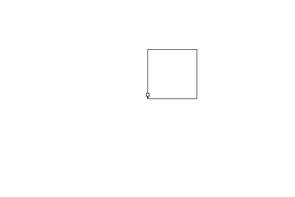

See: Description
| Class | Description |
|---|---|
| AnimatedTurtle |
Animated turtles are turtles that move more slowly, so that we can observe them following their instructions.
|
| Terrarium |
A
Turtle lives (and draws) inside a Terrarium. |
| Terrarium.UnderTheSurface |
The parts of the terrarium that are "under the surface" are not meant to be used by students.
|
| Track |
Turtles make visible tracks in terraria (by dragging their pens, of course)
|
| Turtle |
A turtles lives in a
Terrarium. |
| Turtle.UnderTheShell |
The parts of the turtle that are "under the shell" are not meant to be used by students.
|
Turtle logo is an introduction to computer programming. We imagine that we are working with a turtle that is holding a pen — presumably in its mouth. As the turtle roams around its terrarium, it drags the pen, leaving tracks wherever it goes.
A simple example of a program to control a turtle might look something like this:
import org.gannacademy.cdf.turtlelogo.*;
public class DrawASquare{
public static void main(String[] args) {
Turtle cecil = new Turtle(); // instantiate a new turtle
// give the turtle some instructions
cecil.fd(100);
cecil.lt(90);
cecil.fd(100);
cecil.lt(90);
cecil.fd(100);
cecil.lt(90);
cecil.fd(100);
}
}
The output of this program would be:

This package was designed specifically as a teaching tool. My main intention was to create a "safe" and engaging programming sandbox with clear visual feedback that leads directly and transparently into object-oriented design and programmin in Java. To that end, a few of the intentional design decisions are:
Visual feedback. Obviously, the turtle creates a drawing based on instructions. However, the ability to change a turtle instantiation from a Turtle to an AnimatedTurtle instance without changing code allows for explicity demonstration of instruction order. While interesting effects could be created by varying the speed of turtles, two turtles of differing speeds could also be an interesting entry point to discussions of concurrency and threading (a visual thread race condition).
Object-oriented design. Rather than hiding realities from students, thare are some desireable features that require interaction with objects upfront (Turtle.penColor(java.awt.Color) and JComponent.setBackground(java.awt.Color)) that require some conceptual engagement with objects. While it would be easy, respectively, to conceal Color objects or to pass-through calls to the terrarium via the turtle, I decided to bring them to the surface to provoke conversation. Thus, Color is a first exploration of a Java language API, and the necessity to tell the terrarium directly to change the background color, rather than the turtle, is a first experience of data encapsuatlion.
Unforgiving typing. Well, certainly they have to type their programs, rather than drag blocks. But really what I mean is that I didn't provide a bazillion overloaded methods to account for different potential types. Instead, methods expect parameters whose types make sense (e.g. a "real" pixel dimesnion has to be a whole number, even though everything else is a double. Usually.)
Limited vocabulary. Turtles could, of course, do much more than they do. But their existing instruction set is intentionally limited to help students develop an understanding of computer science as a process of building complex solutions from small, discrete, simple parts. One interesting next step for students might be to think about building Turtle extensions that add greater functionality (e.g. a circle(radius) or arc(radius, degrees) command). Extensions of the Turtle could easily be mapped on to AnimatedTurtle with no modifications.
Redundant vocabulary. Despite the limited vocabulary, turtles do have a vocabulary that is redundant in two dimensions: commands that are direct aliases for other commands (e.g. Turtle.fd(double) is an alias for the base command Turtle.move(double)) and there are commands that are effectively aliases for combination commands (e.g. Turtle.teleport(double, double) is functionally equivalent to Turtle.penUp() → Turtle.moveTo(double, double) → Turtle.penDown()). This is done to provide students a glimpse into both polymorphism, as well as access to multiple approaches to solving challenging problems. I anticipate that some students will tend to favor more "relative" instructions that have the turtle moving from based on its current position, while others will be more comfortable with absolute instructions that move the tturtle based on its destination (Turtle.moveTo(double, double) and Turtle.head(double)). Certainly students can find new challenges in solving a problem using the opposite technique, but this also gives them opportunity to observe classmates successfully ssolving the same problem with a differing approach. Discussions of comparative ease, effectiveness, amd efficiency may naturally occure.
Safeguards. Due to the overall design of Java, there are some slightly unusual design choices that have been made to protect students from themselves. For example, in order to encourage students to explore the IDE's autocompletion features, methods that could create difficult-to-analyze error conditions have been shielded from use, even if they are public. My desire is for any method a students calls to be easily understood and debugged.